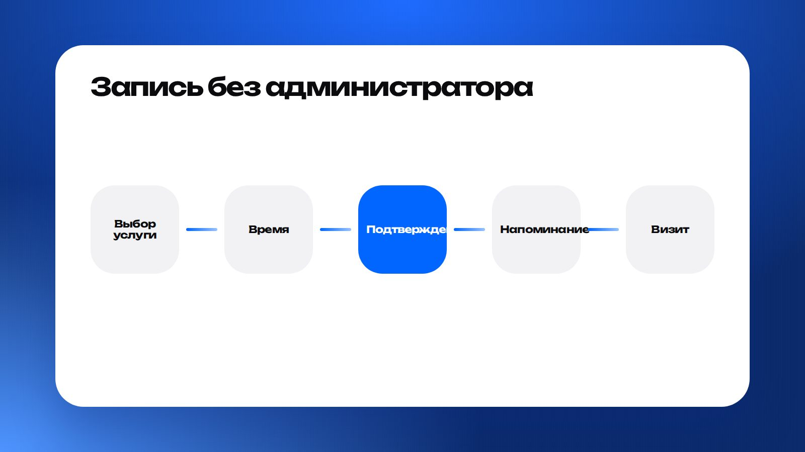
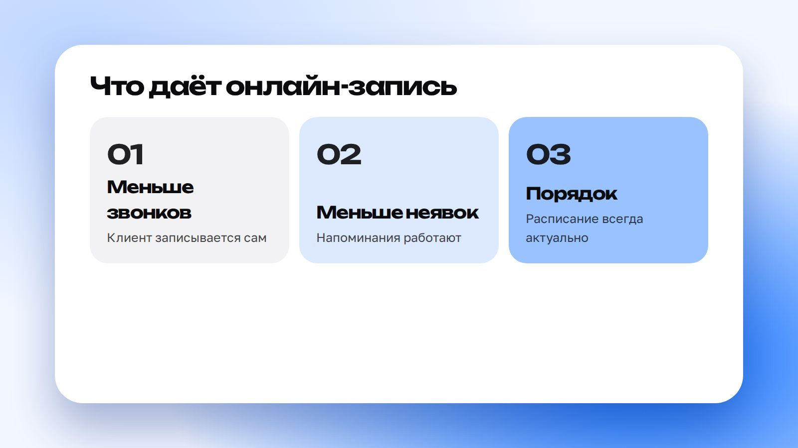

Каждый звонок «хочу записаться» отнимает у администратора время и отрывает его от клиентов в зале. Онлайн-запись убирает эту рутину: клиент выбирает услугу и время сам, а система делает остальное.
Как это устроено

Клиент выбирает услугу и мастера, видит только свободные окна и подтверждает запись. Расписание обновляется автоматически, а напоминания уходят в мессенджер за сутки и за несколько часов до визита.
Что это меняет

- Меньше звонков и переписок.
- Меньше неявок благодаря напоминаниям.
- Расписание всегда актуально и видно всем.
- Клиент может записаться в любое время суток.
Частые вопросы
Что если клиенту нужно перенести запись?
В сообщении с напоминанием есть кнопка переноса: клиент выбирает другое время сам.
Можно ли подключить оплату?
Да, оплата или предоплата подключается к записи.